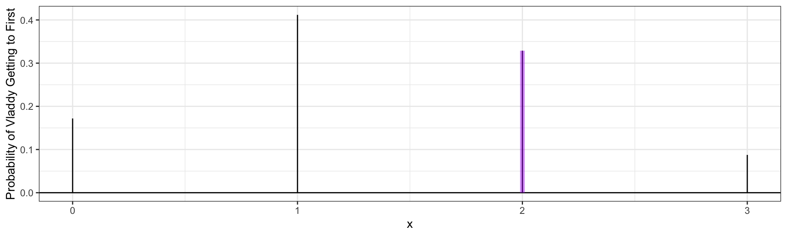
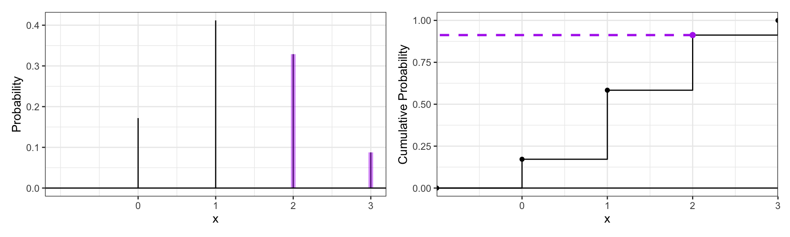
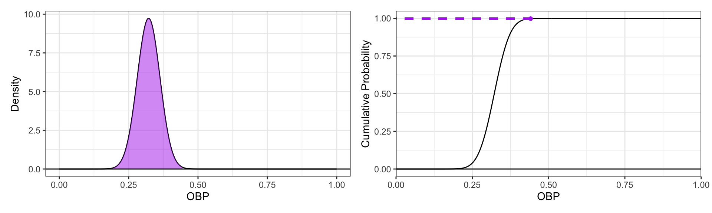

Unit 3 Review - Probability
1 Probability
- Probabiilty is the process of examining a random variable’s distribution given the random variable’s support.
1.1 Definitions
A random variable is some aspect of an observation that can be measured or recorded. In this unit, these variables will always be quantitative
A distribution of a random variable tells us how often a variable can take on certain values. A probability distribution is different from a data distribution in that probability distributions can only be quantitative and they do not summarize data, but rather indicate the likelihood of variables taking on certain values.
The support of a random variable indicate the different values the variable can take on.
Quantitative Distributions can take on two different types of distributions: Discrete and Continuous, and each distribution has different parameters.
Parameters are quantities that desctibeb the population-level distribution.
Continuous random variables can be measured in different levels of units. For example, time is a continuous random variable as it can be broken down into smaller units. Continuous probability distributions will use the Cumulative Distribution Function and the Probability Density Function.
Discrete Random Variables are countable, they also include catagorical variables. Discrete probability functions use the probability mass function and the cumulative distribution function.
The Cumulative Distribution Function of a random variable ( \(F_x(x)\) )gives the probability that a the random variable, x, is less than or equal to a given value of x. It is graphically done in the discrete case by finding the given X value and finding its corresponding probability on the y axis, computationally, R can perform this with p_(), these values are the sum of the values in the PMF function. In the continuous case, the CDF calculates probability with the area under the curve of the PDF function. The inverse CDF is just beginning with a probability value and finding its smallest possible corresponding x value.
This can be expressed notationally with: \(F_x(2) = P(X \leq 2)\)
The Probability Mass function ( \(f_x(x)\) )is only applicable in the discrete case and can inform you of the probability of x taking on a specific value.
This can be expressed notationally with: \(f_x(2) = P(X = 2) = 0.5\)
The Probability Density Function ( \(f_x(x)\) ) is only applicable in the continuous case, and the integral of this function can be used to calculate x taking on a range of functions. It cannot be used to find the probability of a single value of x because that probability is always zero in the continuous case.
This can be expressed notationally with: \(f_x(2) = P(X = 2) = 0\)
1.2 Discrete Probability Distributions
- There are five main discrete random variable probability distributions with built in r functions.
Bernoulli - Models whether an event of interest occurs in a single trial. It’s parameter is p, probability of the event of interest.
Binomial - Models the count of events of interest in a set of trials. It is a generalization of the Bernoulli distribution that can be applied to more trials. It is also parameterized by p, probability of the event of interest, and by n, number of trials.
Negative Binomial - used to model the number of events of non-interest that occur before the rth event of interest. It is also parameterized by p, probability of the event of interest in any trial, and by r, the target number events of interest.
Hypergeometric - used to model the count of selected items of interest in a selection from a set of items. It has three parameters: k, the total number of selections, m, the number of items of interest selected from k, and n, the selected items of non-interest from k.
Poisson - models the number of events of interst in a given time or space. It has one parameter \(\lambda\) that is the average number of events of interest in a given time or space.
1.3 Discrete Probability Distribution Example
The Toronto Blue Jays’ Manager, John Schneider, wants to evaluate the probability of Vladimir Guerrera reaching first base in three at bats. Given he has an average on base percentage of 0.444 so far in the 2026 Season, what is the probability he will reach first base in twice?
First, because we are looking for a countable event of interest, reaching first base, we know that we will have to use a discrete probability distribution. Next, we are given the probability that he will reach first base, his average on base percentage, which indicates that it will not be a hypergeometric or Poisson distribution. Because we are given a set number of trials greater than one, we should use the Binomial distribution where \(n=3\), \(p=0.435\), and \(x=2\) as we want to know when he will reach the base twice.
Code
ggdat <- tibble(x = 0:3) |>
mutate(PMF = dbinom(x, 3, 0.444))
#make data contain the PMF
#use the dbinom function for the binomial distribution for PMF
PMF.plot <- ggplot() +
geom_linerange(data = ggdat,
aes(x = x,
ymin = 0,
ymax = PMF)) +
#Specifies PMF data
geom_hline(yintercept = 0) +
geom_linerange(data = ggdat |>
filter(x == 2), # when x equals 2
aes(x = x, ymin = 0, ymax = PMF),
color = "darkorchid2", linewidth = 2, alpha = 0.50) + #highlight w color
scale_x_continuous("x", breaks= 0:3) +
#0:3 for diff outcomes
ylab("Probability of Vladdy Getting to First") +
theme_bw()
PMF.plot
This PMF graph demonstrates how often Guerrera will reach first base twice relative to the other possibilities. This can be calculated in R with:
Given that John Schneider also wants to see when Guerrera reaches first base at least twice, how could this be represented graphically and calculated in R?
We should still use the binomial distribution, but adjust our calculations and use the CDF as well as the PMF.
Code
ggdat <- tibble(x = -1:3) |>
mutate(PMF = dbinom(x, size = 3, prob = 0.444),
CDF = pbinom(q = x, size = 3, prob = 0.444))
PMF.plot <- ggplot() +
geom_linerange(data = ggdat,
aes(x = x, ymin = 0, ymax = PMF)) +
geom_linerange(data = ggdat |>
filter(x >= 2), # when x is at least than 2
aes(x = x, ymin = 0, ymax = PMF),
color = "darkorchid2",
linewidth = 2,
alpha = 0.50) + #highlight w color
geom_hline(yintercept = 0) +
scale_x_continuous("x", breaks = 0:3) +
ylab("Probability") +
theme_bw()
CDF.plot <- ggplot() +
geom_step(data=ggdat, aes(x = x, y = CDF)) +
geom_point(data=ggdat, aes(x = x, y = CDF)) +
geom_hline(yintercept = 0) +
scale_x_continuous("x", breaks=0:3, expand = c(0, 0)) +
geom_segment(aes(x = 2,
y = pbinom(q = 2,
size = 3,
prob = 0.444),
xend = -1, yend = pbinom(q = 2,
size = 3,
prob = 0.444)),
color = "darkorchid2", linetype = "dashed", size = 1) +
geom_point(aes(x = 2,
y = pbinom(q = 2,
size = 3,
prob = 0.444)),
color = "darkorchid2", size = 2)+
ylab("Cumulative Probability") +
theme_bw()
PMF.plot | CDF.plot
To calculate \(P(X \geq 2)\), we need to use either \(1 - F_x(1)\) or \(f_x(2) + f_x(3)\). We can do this in R with:
1.4 Continuous Probability Distributions
There are eight main continuous probability functions with built in r functions.
Uniform - models a continuous outcome that is equally likely to occur within a lower and upper bound. It’s parameters are a, the population minimum, and b, the population maximum
Gaussian/Normal - models a continuous outcome more likely occur near the mean and symmetrically less likely to occur near the tails. It is parametered by the population mean, \(\mu\), and the population standard deviation, \(\sigma\).
Lognormal - models a continuous outcome that is strictly positive. This distribution is right skewed. If \(x\) follows a lognormal distribution then \(log(x)\) will follow the Gaussian distribution. It is parametered by the population mean of \(log(x)\), \(\mu\), and the population standard deviation of \(log(x)\), \(\sigma\).
Exponential - models a continuous outcome that is strictly positive, and is thus right-skewed. It has one rate parameter \(\lambda\), which is the inverse of the population mean.
Gamma - models a continuous outcome that is strictly positive, and is thus right-skewed. It has two parameters: \(\alpha\), the shape parameter (controls skewness), and \(\beta\), the rate parameter (scales mean and variance).
Chi-Squared distribution - a model used for statistical inference. It is strictly positive, right-skewed, and paramaeterized by degrees of freedom, \(v\), which controls the mean and variance.
Student T distribution - a model used for statistical inference. It is a symmetric and bell shaped dsitribution, similar to Gaussian, but it is more peaked with wider tails. It is parameterized by the degrees of freedom, \(v\), which controls the variance. \(v = n-1\). As \(v\) increases, the student T distribution approaches the Gaussian Distribution.
F Distribution - a model used for statistical inference. It has a strictly positive support and is right skewed. It has two parameters: \(u\), the numerator degrees of freedom, and \(v\) the denominator degrees of freedom.
1.5 Continuous Probability Distribution
A Toronto Blue Jays fan wants to find what the probability of Vladimir Guerrera’s on base percentage (0.444) is relative to other MLB players. If the distribution of all MLB players on base average is symmetrical and the population mean is 0.322 and the population standard deviation is 0.041, what is the probability Guerrera has this OBP?
We need to use a continuous probability distribution here because on base percentage can be measured in different levels of units (unlimited decimal places) and are not countable. Then, to determine which distribution is best for this calculation, we can note that the population data distribution is symmetrical, leaving us with the Gaussian, Student T, Chi and Uniform distributions. We were also given a population mean and standard deviation, indicating we will need to use the Gaussian from those distributions.
To represent this graphically:
Code
ggdat <- tibble(x = seq(0, 1, length.out=1000)) |>
mutate(PDF = dnorm(x = x, mean = 0.322, sd = 0.041),
CDF = pnorm(q = x, mean = 0.322, sd = 0.041))
PDF.plot <- ggplot(ggdat) +
geom_line(aes(x = x, y = PDF)) +
geom_ribbon(data = ggdat|> filter(x <= 0.444), #fills area after x= 0.444
aes(x=x, ymin=0, ymax= PDF), #max keeps it from going above line
fill= "darkorchid2", alpha= .5) +
geom_hline(yintercept = 0) +
xlab("OBP") +
ylab("Density") +
theme_bw()
CDF.plot <- ggplot(ggdat) +
geom_line(aes(x = x, y = CDF)) +
geom_point(data=tibble(x=0.441) |>
mutate(CDF = pnorm(q = x,
mean = 0.322,
sd = 0.041)),
aes(x = x, y=CDF),
color="darkorchid2")+ #makes visible dot to mark p=0.5
geom_segment(aes(x = 0.444,
y = pnorm(q = 0.444,
mean = 0.322,
sd = 0.041),
xend = 0,
yend = pnorm(q = 0.444,
mean = 0.322,
sd = 0.041)),
color = "darkorchid2", linetype = "dashed", size = 1) +
geom_hline(yintercept = 0) +
xlab("OBP") +
scale_x_continuous(expand = c(0, 0)) +
ylab("Cumulative Probability") +
theme_bw()
PDF.plot | CDF.plot
The area under the PMF curve (on the right) is calculated and shown on the CDF curve, where Guerrera’s OBP is shown with a dot and the dotted line shows what the probability of his average is.
The fan wants to see the probability of another player having a better OBP than Guerrera.This probability can be calculated in R with 1 - \(F_x(0.444)\):
The probability of another MLB player this season having a better OBP than Guerrera is less than 1% (This is subject to variation as the season progresses)!
1.6 Citations
I used R (R Core Team 2025) for my coding language, the knitr package (Xie 2025) for organizing graphs, the patchwork package (Pedersen 2025) to make clean graphs, and the tidyverse package (Wickham et al. 2019) for more readable code and graphs.